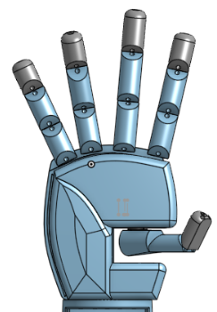

Hand and Fingers
I started by designing the hand around my own measurements so the final model would have realistic proportions and be roughly the same size as my hand. This gave me a physical reference to work from instead of designing the hand around arbitrary dimensions.
For the fingers, I created cylinders and then sliced both sides at a 45-degree angle. This created the individual bending sections needed for the fingers to move naturally.
I then added internal holes to control how each finger moved. The front section had a hole for the string to pass through. When the string was pulled by the servo, it would bend the finger.
Behind this, I added two more holes for a rubber band. The rubber band kept the finger upright and allowed it to return to its home position when the string was loosened.
Finally, I created an opening for the thumb. Because the thumb needs more movement than the other fingers, I used two servos: one servo controls the thumb moving left and right, while the second servo controls the thumb curling motion.